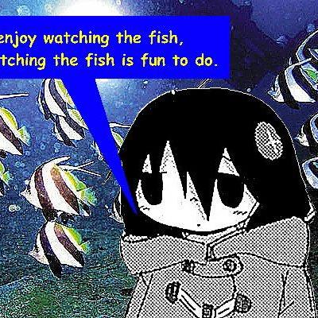

Hi! I'm Axel, an Informatics student.
Most of what I've done so far lives in software: I've built AI models from scratch in Python, including a complete fuzzy logic inference system, worked with datasets using Pandas and NumPy, and made a few web and desktop apps along the way.
Lately I've been more and more curious about the IoT side of things, where software meets real sensors and hardware, and where the usual "just add more compute" answers stop working. It combines the AI topics I already enjoy with a completely new set of constraints I haven't worked with yet.
That's exactly why I'm applying to the AI for IoT stream at the IoT Research Group: it's the part of the field I know the least about, and the part I most want to learn properly, from people who actually build smart devices for a living.
Axel
Languages
Data & AI
Fundamentals
What I want to learn in the lab ⭳
The percentages are honest self-assessments — except the last group, which isn't a skill yet. It's what I want to learn from the lab, and it's the reason I'm applying.
A group project for IF4806: a digital cinema ticket booking system, built in Java to replace clunky manual ticket management. I contributed a lot to this one across the project — long stretch of work that taught me plenty about turning half-formed ideas into an actual working app with other people.
A full fuzzy logic system that rates movies, written in Python — membership functions, rule evaluation, and defuzzification all built by hand, no ML libraries. Fuzzy logic also happens to be one of the classic ways smart devices make decisions on limited hardware, so this felt like a good place to start thinking about edge AI.
Comparing Bubble Sort and Quick Sort on real IMDb rating data. On the surface it's a sorting exercise; the interesting part is why O(n²) vs O(n log n) actually matters when compute is cheap — and why it matters a lot when it isn't, like on a microcontroller.
Placeholder slot: edit index.html and replace this row with your web
application, a short description, and a link.
🟢 Online — open to a chat about AI, IoT, or anything in between.
Click "Email" to copy the address once you've added it.